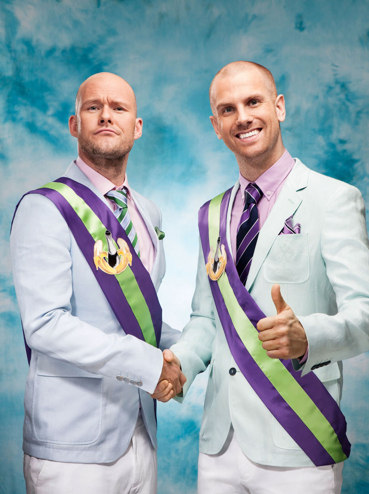
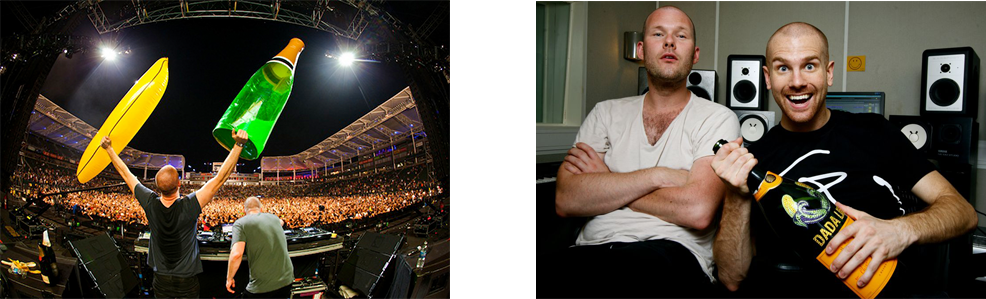
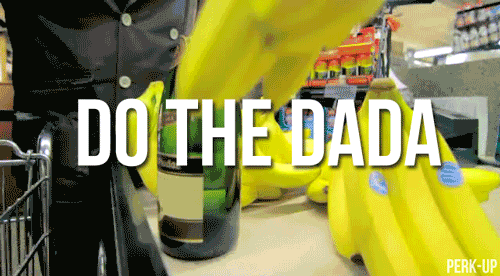

Dada Life is made up of a duo of Swedish DJ’s, Olle Cornéer and Stefan Engblom. Their music genre would be best classified as electro house and progressive house. Their music is usually fast and fun with a mixing of interesting choice of vocals and videos to some of their songs. They are known for their upbeat instrumentals and humorous and very out-there music videos. The duo started individually both releasing songs by themselves before they started working together in 2006. Engblom’s first song in 2001 and Cornéer’s in 2005. On October 26 2013 Dada Life broke the Guinness World Record for the world’s largest pillow fight at a Dada Land event. In 2015 they also broke the Record for the largest gathering of people dressed as fruit. Dada Life just has a fun air to them and their music which makes it more appealing.
I first heard of Dada Life from a friend who linked me a video asking if I had ever heard of this artist before. He listened to the same music I did so it was a constant back and forth of artists and video links. The first song that I can remember hearing is Kick Out The Epic MF or Feed The Dada. Both of these songs made the top charts in Sweden on the year of their releases. I still think that these two songs are some of their better content, even though one of these isn’t really safe for work. I remember thinking that the beats to their music was outgoing and fast paced. It was nice to listen to while I was working on other things. I am someone who goes through different artists and music and I feel their music still sticks with me and is fun to listen to while playing games doing homework or in the car driving.
Their music makes me think of parties and exciting events where everyone is having a good time and messing around. This kind of music makes it feel like you can have fun while you’re doing mundane events or in boring situations. If I had to pick a favorite track by them is probably Feed The Dada. I feel like I like the beat of this song and even if you can’t pay attention to the words you can still enjoy it. I wish that Dada Life had more songs like some of their older songs. The Opinion I have of them has not really changed and they still have the upbeat fun music they did when I started listening to them.
